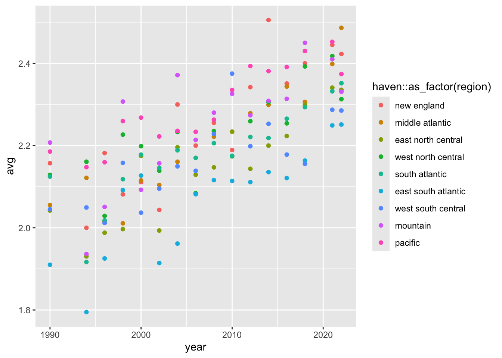
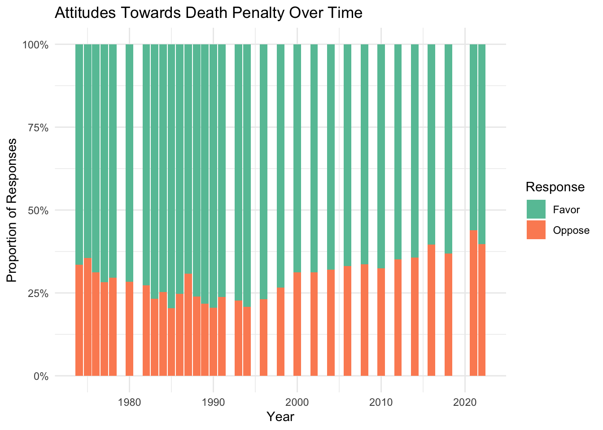
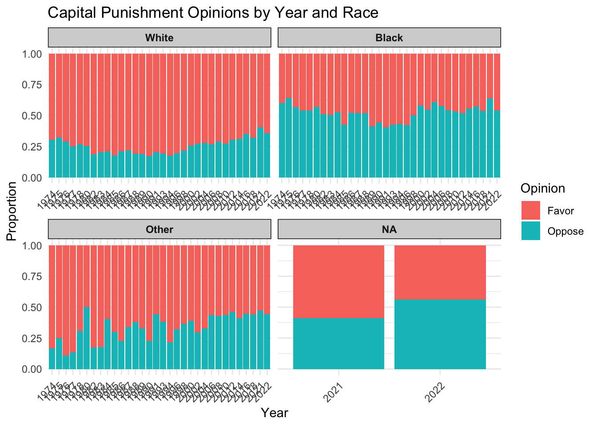
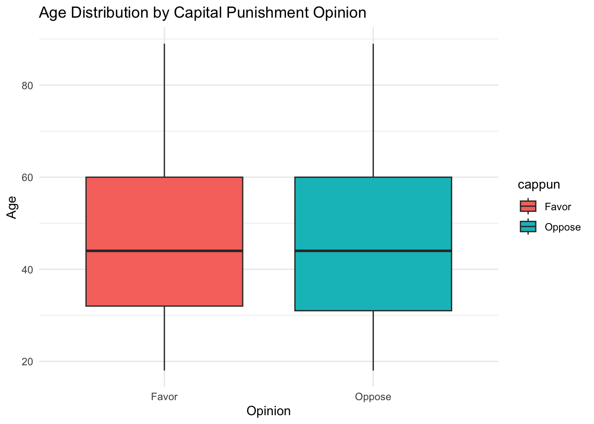

3.2.1 Which groups of people agree the most on affirmative action? Which differ the most?
Code
library(gssr)
Warning: package 'gssr' was built under R version 4.4.2
Package loaded. To attach the GSS data, type data(gss_all) at the console.
For the codebook, type data(gss_dict).
For the panel data and documentation, type e.g. data(gss_panel08_long) and data(gss_panel_doc).
For help on a specific GSS variable, type ?varname at the console.
Code
library(dplyr)
Attaching package: 'dplyr'
The following objects are masked from 'package:stats':
filter, lag
The following objects are masked from 'package:base':
intersect, setdiff, setequal, union
`summarise()` has grouped output by 'year'. You can override using the
`.groups` argument.
Code
b <-ggplot(year_averages, aes(x = year, y = avg, color = haven::as_factor(region))) +geom_point()b

3.3 Capital Punishment
3.3.1 Exploratory
Code
# install.packages('gssr', repos = c('https://kjhealy.r-universe.dev', 'https://cloud.r-project.org'))# install.packages('gssrdoc', repos = c('https://kjhealy.r-universe.dev', 'https://cloud.r-project.org'))library(gssr)library(dplyr)library(ggplot2)data(gss_all)# Get Cappun Data# cappun: Do you favor or oppose the death penalty for persons convicted of murder?cappun_data <- gss_all |>select(year, cappun) |>filter(cappun==1| cappun==2)# Convert to factor with meaningful labelscappun_data$cappun <-factor(cappun_data$cappun, levels =c("1", "2"),labels =c("Favor", "Oppose"))# Plot 1ggplot(cappun_data, aes(x = year, fill = cappun)) +geom_bar(position ="stack") +labs(title ="Attitudes Towards Death Penalty Over Time",x ="Year",y ="Count of Responses",fill ="Response") +theme_minimal() +scale_fill_brewer(palette ="Set2")
Code
# Calculate proportionscappun_summary <- cappun_data |>group_by(year, cappun) |>summarise(count =n()) |>group_by(year) |>mutate(proportion = count /sum(count))# Plot 2ggplot(cappun_summary, aes(x = year, y = proportion, fill = cappun)) +geom_bar(stat ="identity", position ="stack") +scale_y_continuous(labels = scales::percent) +labs(title ="Attitudes Towards Death Penalty Over Time",x ="Year",y ="Proportion of Responses",fill ="Response") +theme_minimal() +scale_fill_brewer(palette ="Set2")

Code
library(forcats)library(ggplot2)library(dplyr)# Get Cappun2 Data# cappun2: Are you in favor of the death penalty for persons convicted of murder?# Select the relevant datacappun2_data <- gss_all |>select(year, cappun2)# Convert cappun2 to a factor, which will preserve all categories including "don't know"cappun2_data <- cappun2_data |>mutate(cappun2_factor =as_factor(cappun2)) |>filter(cappun2_factor !="iap"& cappun2_factor !="no answer")# Pie Chart to show "i don't know" responses (1972-1973)ggplot(cappun2_data, aes(x ="", fill = cappun2_factor)) +geom_bar(width =1, color ="white") +coord_polar("y", start =0) +theme_void() +labs(title ="Distribution of Capital Punishment Opinions",fill ="Response" ) +geom_text(stat ="count", aes(label = scales::percent(..count../sum(..count..))), position =position_stack(vjust =0.5) ) +scale_fill_brewer(palette ="Set3")
3.3.2 Which groups of people (e.g. gender, age, race) agree the most on capital punishment? Which differ the most? What are possible explanations for this?
Code
library(dplyr)# Select the relevant datacappun_data <- gss_all |>select(year, race, cappun) |>filter(cappun==1| cappun==2)# Convert to factor with meaningful labelscappun_data$cappun <-factor(cappun_data$cappun, levels =c("1", "2"),labels =c("Favor", "Oppose"))ggplot(cappun_data, aes(x =as.factor(year), fill = cappun)) +geom_bar(position ="fill") +facet_wrap(~ race, scales ="free_x", labeller =labeller(race =c("1"="White", "2"="Black", "3"="Other"))) +labs(title ="Capital Punishment Opinions by Year and Race",x ="Year",y ="Proportion",fill ="Opinion" ) +theme_minimal() +theme(axis.text.x =element_text(angle =45, hjust =1),strip.background =element_rect(fill ="lightgray"),strip.text =element_text(face ="bold") )

Code
# Calculate proportions by year and race# prop_data <- cappun_data |># group_by(year, race, cappun) |># summarise(count = n()) |># group_by(year, race) |># mutate(proportion = count / sum(count))# # ggplot(prop_data, aes(x = year, y = proportion, color = cappun, linetype = as.factor(race))) +# geom_line() +# labs(# title = "Trends in Capital Punishment Opinions",# x = "Year",# y = "Proportion",# color = "Opinion",# linetype = "Race"# ) +# theme_minimal()
Code
library(dplyr)# Select the relevant datacappun_data <- gss_all |>select(year, age, cappun) |>filter(cappun==1| cappun==2)# Convert to factor with meaningful labelscappun_data$cappun <-factor(cappun_data$cappun, levels =c("1", "2"),labels =c("Favor", "Oppose"))ggplot(cappun_data, aes(x = cappun, y = age, fill = cappun)) +geom_boxplot() +labs(title ="Age Distribution by Capital Punishment Opinion",x ="Opinion",y ="Age" ) +theme_minimal()

Code
ggplot(cappun_data, aes(x = age, fill = cappun)) +geom_density(alpha =0.5) +labs(title ="Age Density by Capital Punishment Opinion",x ="Age",y ="Density",fill ="Opinion" ) +theme_minimal()
Code
ggplot(cappun_data, aes(x = cappun, y = age, fill = cappun)) +geom_violin(trim =FALSE) +geom_boxplot(width =0.2, position =position_dodge(0.9), alpha =0.7) +labs(title ="Age Distribution by Capital Punishment Opinion",x ="Opinion",y ="Age" ) +theme_minimal()
3.3.3 Have peoples’ opinions on capital punishment changed over the past 50 years? How so?